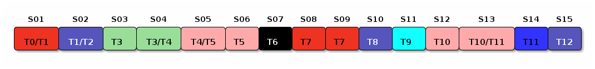
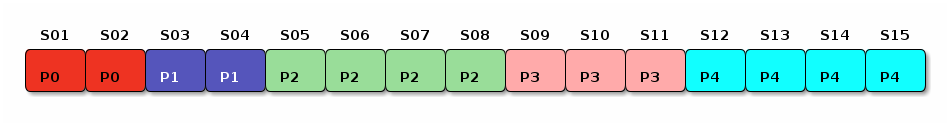

Created: 2025-01-28 mar 23:40
Departamento de Lenguajes y Sistemas Informáticos (DLSI).
Primer curso: Programación II , segundo semestre.
La asignatura dispone de página web propia. Es recomendable que la consultes habitualmente.
Es un examen tipo test del tipo elegir la única respuesta posible entre cuatro alternativas.
Tres respuestas erróneas anulan una correcta.
Es conveniente hacerlo a lápiz ya que puedes corregir respuestas previas que hayas marcado y quieras cambiar.
La corrección de las prácticas se realiza con la versión del
compilador de C++ que tenéis instalada en los laboratorios de la
EPS.
Tenlo en cuenta dado que:
C++ es un lenguaje diferente a C.
Cambios en la versión del compilador y/o en la de la biblioteca
estándar de C++ pueden hacer que tu código no compile o funcione
de manera diferente a como lo haría con la versión del
compilador de la EPS.
En la asignatura empleamos la versión de C++ de 2017, más conocida
como C++17 y más concretamente la que implementa el compilador
instalado en los laboratorios de la EPS.
Una forma sencilla de tenerlo instalado es usando una máquina virtual de VirtualBox. Para ello, debes crear una imagen VDI de la instalación de Ubuntu en la EPS (Ubuntu 24.04). Hay mucha documentación referida a las máquinas virtuales, por ejemplo aquí.
Es conveniente que leas el Reglamento para la evaluación de los aprendizajes de la UA, p.e en el artículo 14 donde se habla de Realización fraudulenta de pruebas de evaluación, punto 1:
Durante la prueba, el alumnado está obligado a observar las normas sobre autenticidad del ejercicio y privacidad del mismo.
El temario de la asignatura es el siguiente:
try,
throw, catch, finally).Disponemos también de una Práctica 0 la cual nos sirve como práctica de iniciación en la asignatura.
No cuenta para la nota final.
A partir del curso 2022/2023 la asignatura va a proporcionaros docencia complementaria al inicio de algunas clases de prácticas.
Se trata de que conozcáis y sepáis usar algunas herramientas adicionales que os serán muy útiles a la hora de programar:
Make / Makefiles, el depurador gdb y la herramienta de análisis
en tiempo de ejecución valgrind.
Estas tres herramientas ya las veníamos explicando desde hace algunos cursos.
violación de
segmento, división por cero, etc...) implicarán una nota de 0.0.printf, cout ) que lo devuelva.
Figura 1: Planificación de la teoría.

Figura 2: Planificación de las prácticas.
La asignatura no es difícil pero sí tiene muchos conceptos nuevos; estudia día a día.
Para que te sirva como referencia… por cada hora de clase deberías dedicarle alrededor de hora y media de estudio en casa.